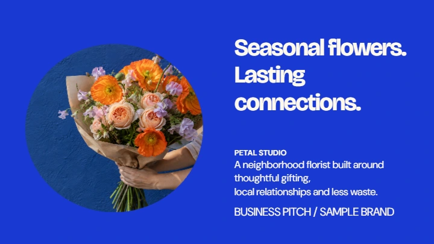

A little idea.
A whole lot of
possibility.
Give it shape. Give it color. Give it a life of its own.
Meet your new desktop design studio.
Free for Windows. Your AI account. Your creative freedom.

Whatever’s in your head,
let it out.
A launch. A birthday. A very big announcement.
Start with a design. Make every piece your own.
12 designs on show
All the tools.
All yours.
Push the type. Crop the photo. Move things around.
This is your space to get it just right.


A creative partner.
You set the direction.
Bring your own AI account. Bring your brand’s purpose and your personal style. Then tell Forma what you’re trying to say.
Create a design, refine a selection, or draw exactly where an image needs a change. Keep shaping it until it feels like you.
Meet the AI toolsGrown here.
A neighborhood florist.
Seasonal flowers. Thoughtful gifts.

Room to breathe.
Type with personality.

Think bigger
than one post.
Give your campaign an objective. Create focused folders for each message. Add your photos and choose the formats you need.
Instagram. Facebook. LinkedIn. A poster in the window. Build a collection that belongs together.
Build your first campaignSome ideas
have another side.
Real 3D letters, numbers and objects.
Turn them. Light them. Make them move.

At home on your desktop.
Backed up on your terms.
Your work saves on your device. Want a second copy? Connect your own Wasabi account and send your saved workspace straight to your private bucket.
Designs, campaigns, photos, fonts and your shared brand and style. Back them up together. Restore projects as copies when you need them.
Set up your storageGo on.
See what happens.
What am I downloading?
Forma Studio 1.6.1 for Windows 10/11, 64-bit. The installer includes the editor, local AI worker and Codex CLI. Open it from your desktop or Start menu. This release is unsigned.
Do I need an AI subscription?
Manual design tools and exports work without AI, including offline. AI tools need your own supported Codex account and internet connection. Forma does not include an AI subscription or charge for provider usage.
Does my work leave my computer?
Designs save locally. AI requests send the relevant brief and content to your provider. Optional Wasabi backups go directly to the storage account you connect; Wasabi bills you separately. Mac payments and activation use managed Stripe and Netlify services.
When can I get the Mac edition?
Mac is $49 as a one-time payment for one Mac, with Intel and Apple Silicon support on macOS 12 or later. Checkout stays closed until the signed Mac installer and payment delivery are ready. Check Mac availability ↗